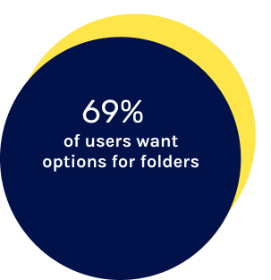
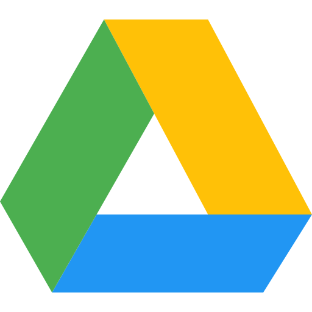
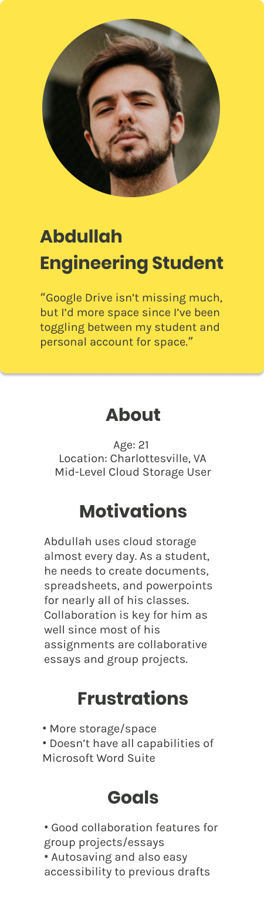
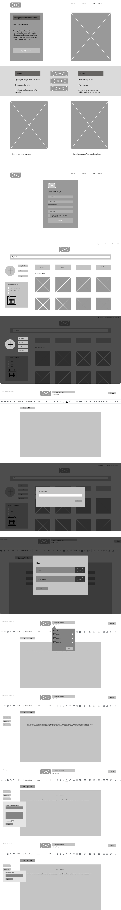
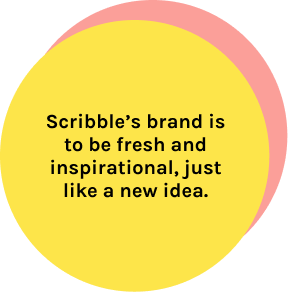
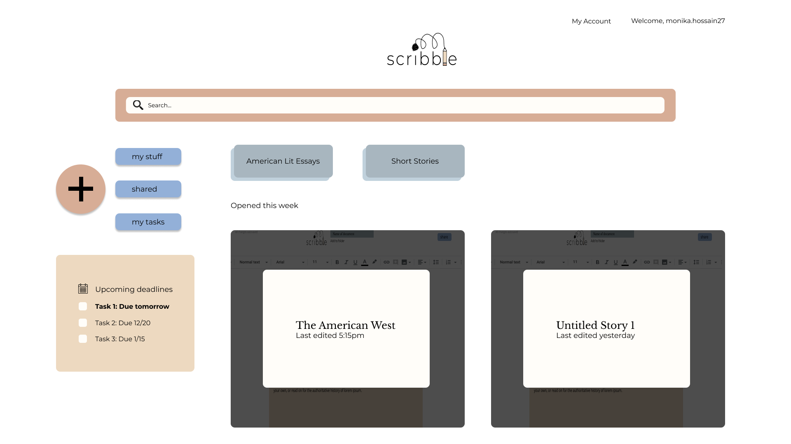
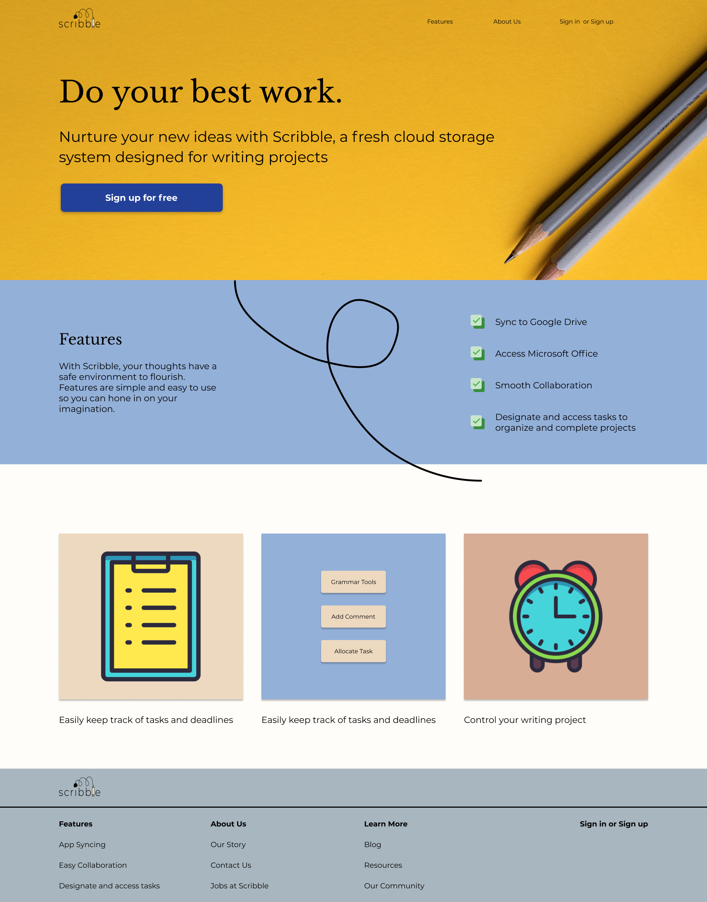
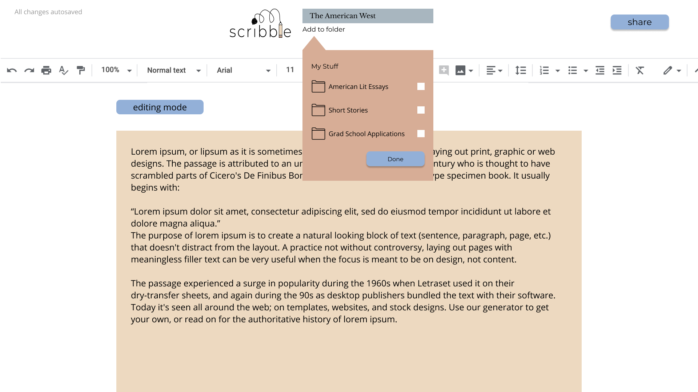

Do your best work.
Nurture your new ideas with Scribble, a fresh cloud storage system designed for writing projects.

Roles + Deliverables + Tools
I led the design of Scribble’s platform on desktop applications, including efforts to improve the platform through user research, prototype mockups with Figma and Invision, and usability tests. Deliverables included images, icons, prototype mockups of the app, logos, and a style guide.
What is Scribble?
EC Production believes that the cloud storage and organization market hasn’t reached its full potential yet. The organization wanted to explore new, more dynamic ways to take advantage of this growing market by finding the right features to meet the right audience. Thus, Scribble was born, a fresh cloud storage platform for writing projects.

Problem
We needed a new target audience, differentiating features, and a brand in the cloud storage space. Once we discovered that students filled a niche in this market, the pain points for users were:
- • not having enough collaborative features,
- • difficult organization,
- • and difficulty accessing writing projects.
+ Solution
Scribble solves the problem by including effective collaborative features, efficient organization through folders, and access to other writing projects via Google Drive and OneDrive.
PART 1: Discovery + Research
CHAPTER 1: The Survey
Using a survey we conducted of 15 participants, we found a niche market within students and education, specifically with regards to writing projects. The following are questions we asked about what collaborative, organizational, and app syncing features users wanted in a cloud storage system.
Collaboration
Organization
Access to other apps
The competitive analysis
Google Drive, Dropbox, and Evernote dominate the cloud platform and organizational space currently.
All three companies’ primary audiences were students, professionals, and anybody with organizational needs. Evernote also places an emphasis on writers specifically.

A competitive analysis of all three companies showed opportunities to potentially use machine-intelligence to auto-file content, efficiently export content, sync to widely used cloud services, and offer more in-document resources to aid the writing process.
The Persona
The personas we mocked up were of two students: an MFA student with in-document writing needs and an engineering student who wants more collaborative features.

PART 2: INFORMATION ARCHITECTURE
CHAPTER 4: The User Stories
User stories are based on most frequent tasks as well as what users wanted most out of a cloud storage system. We identified these key processes to focus on for Scribble’s prototype:
CHAPTER 5: The User Flows
User flows are based on the user stories we identified above. The one below is a task regarding a collaborative feature identified through the user survey - a lead team member allocating tasks in the margin for group work.
Although this task is low in priority, we included it to create the MVP because users wanted it as a collaborative feature in the survey.
CHAPTER 6: The Wireframe Sketches
Using all of the processes listed in user flows, wireframes reflected the simple nature of Scribble. The dashboard wireframe went through the most adjustment. It was refined to include sidebars to anchor sections. This improved the dashboard’s usability (discussed later).
The Wireframes + Usability Testing
Usability Testing

Sign-in window was not intuitive for users based on testing. We fixed this by adding a Google sign-in button in later iterations.

Dashboard is not anchored with sidebars or visually pleasing. Users felt that the dashboard was floating. We fixed this issue by adding sidebars and a navbar.

Buttons for creating content did not make intuitive sense to users in this version.
PART 3: BRANDING
CHAPTER 8:The Logo + Colors + Typography
We chose Scribble because it conveys the brainstorming phase of an idea, the birth of a project or portfolio, and the beginnings of something exciting. A scribble can start small and end big. The logo incorporates a pencil connected to a scribble to show that ideas can be fickle at first, but it’s all part of the process.
Colors
To appeal to a younger, academic, and often stressed writer population, branding involved soft, muted, and modern colors to cultivate a relaxed, but studious atmosphere.
Typography
The typography matches this idea by being fresh, inspirational, and nurturing. The brand uses fonts that are old and new. Innovation and creation is often a revamping of old ideas. That’s why the fonts incorporate a serif brand typeface, Libre Baskerville, that pays homage to old writing and fonts and a more familiar geometric style font, Montserrat, to complement. Scribble is primarily meant to foster writing projects as well, which is why we incorporated a more literary feel to the typeface.
Libre Baskerville
A B C D E F G H I J K L M N O P Q R S T U V W X Y Z a b c d e f g h i j k l m n o p q r s t u v w x y z 0 1 2 3 4 5 6 7 8 9 ! ? . , ; ‘ “
Montserrat
A B C D E F G H I J K L M N O P Q R S T U V W X Y Z a b c d e f g h i j k l m n o p q r s t u v w x y z 0 1 2 3 4 5 6 7 8 9 ! ? . , ; ‘ “
PART 4: Visual Design + Prototype/Testing
CHAPTER 10: The High-Fidelity Mockups
High fidelity mockups brought Scribble’s branding to the wireframes. Many aspects were adjusted in the high fidelity mockups after user testing such as:
We incorporated a Google button to standardize the Google sign-in process. In addition, we changed the sign up button for better contrast.
We cleaned up the dashboard with a sleek navbar, easily identifiable links on the side, easily identifiable folders, actionable buttons, more immediate tasks on the right side, and a multitude of icons for a better visual aesthetic. The newer design is a more organized and user friendly dashboard.

CHAPTER 11: The Preference Test
IWe edited the homepage to include a footer and a cleaner design. Preference testing showed that users preferred the three images horizontally placed (as seen in the last iteration) rather than the images stacked on one another (as seen in the first iteration).
CHAPTER 12: The High-Fidelity Usability Testing
Usability testing for the high-fidelity mockups showed some hiccups for in-document folder organization. Users wanted better folder icons and better marking for choosing folders. Users also did not want a beige document to type in.

PART 5: Final Thoughts
CHAPTER 13: The Epilogue
Users seemed satisfied with the general feel of the platform. Although we had initial doubts about the branding not being assertive enough, it worked in favor of the target audience who were receptive to it. The allocating task feature was also a popular one for the platform. Even though we worked and reworked the dashboard, if given more time, we would have spent more energy researching and testing for this screen. We went through the most iterations with the look and feel of the dashboard, but if given more time, we might play with anchoring the sidebar with a different color or texture. More consistent icons and CTAs would also increase Scribble’s usability. For future projects, the dashboard will be tested and retested to ensure optimal usability of a product.